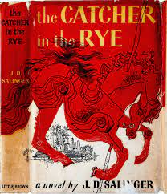

BOOK 9

"The Catcher in the Rye" by J.D. Salinger:
Background: Released in 1951, J.D. Salinger's novel follows the experiences of Holden Caulfield, a
disenchanted teenager. The book has been both widely praised and criticized, becoming a significant
work in the genre of coming-of-age literature.